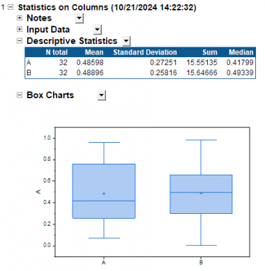
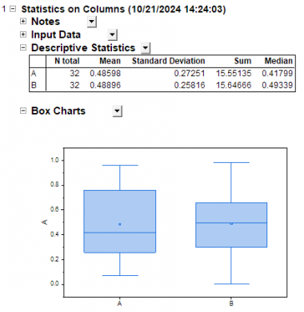
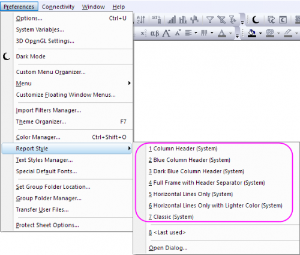

Der Dialog Berichtsstil bietet eine Oberfläche zum Anpassen des Tabellenstils des Berichtsblatts von Origin.
Sie können das Feld Vorschau verwenden, um die benutzerdefinierte Einstellung zu prüfen.
Wenn Sie auf OK klicken, um den neuen Stil zu speichern, wird er auf den Standardstil des Berichtsblatts gesetzt. Das neue Berichtsblatt folgt dem neuen Stil. Sie können eine Neuberechnung durchführen, um den vorhandenen Stil des Berichtsblatts zu aktualisieren.
Origin bietet mehrere Systemdesigns für den Berichtsstil. Sie können im Hauptmenü direkt Einstellung: Berichtsstil: [Designname] wählen, um das Design des Berichtsblattsstils zu ändern. 
| Spaltenheader | Blauer Spaltenheader |
|---|---|
|
|
| Dunkelblauer Spaltenheader | Ganzer Rahmen mit Headertrennzeichen |
 |
 |
| Nur horizontale Linien | Nur horizontale Linien mit hellerer Farbe |
|
|
| Klassisch | |
|